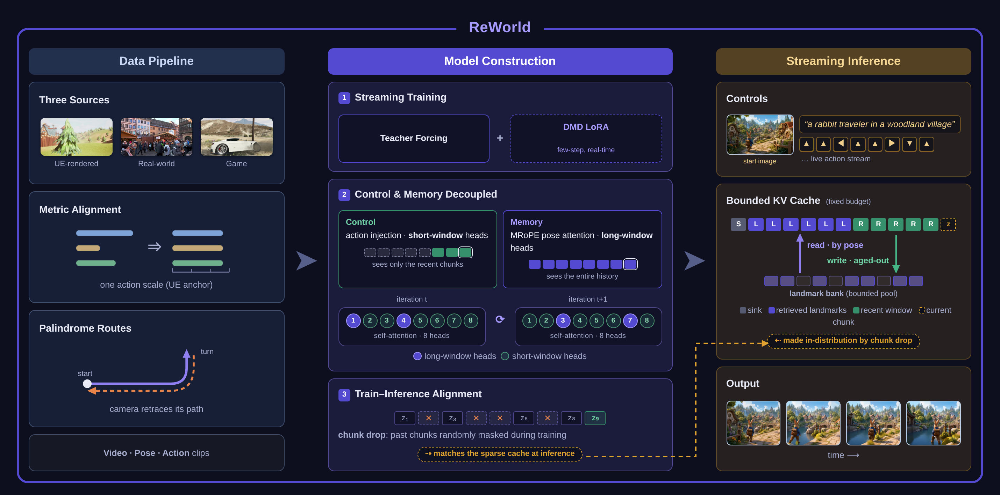

The world matches the initial scene: An adult astronaut walking across a vast desert training landscape toward a rover and distant hills. The established spatial layout, principal forms, material palette, and lighting remain recognizable throughout. Independent environmental motion keeps the world active: the astronaut takes deliberate weighted steps, fine dust lifts and settles around the boots, loose suit elements shift subtly, and heat haze shimmers above the distant terrain. These background motions unfold continuously at varied but physically plausible speeds, with restrained secondary reactions and stable depth relationships. The same world persists coherently over time: architecture, terrain, route structure, subject identity, scale, color, and material appearance remain consistent, with no newly appearing objects, readable text, abrupt transformations, or discontinuous changes.
How it works
One streaming diffusion backbone, trained so that control and memory stop fighting over the same context window.

Window-split training
Control learns under short windows, memory under long ones. Per-step head routing decides which attention heads see the distant past, so precise action-following and long-range recall are trained without compromising each other.
Bounded memory
An odometer-admitted landmark bank with pose retrieval. Views are admitted as landmarks by traveled distance and retrieved by camera pose under a fixed KV budget — memory stays flat no matter how far you roam.
Real-time streaming
Metric-aligned multi-source data, then 4-step distillation. Trajectories from many sources are aligned to a common metric scale, and the distilled model streams interactive 704×1280 video in real time.
The world remembers
Leave and come back — the scene is still there. Twenty-four 16-second journeys: each clip roams away from its opening view, and the badged ones navigate all the way back. Hover any card for its generation prompt; the corner button opens it full-size.
Follow any camera intent
Twelve clips driven by live key input — the exact sequence is shown in the on-screen HUD — while the scene stays coherent, in first person and third.
Learning the world beneath the pixels
Every training source shares one physical action scale, so the model has to internalize real size and distance, not just appearance: the same key press always covers the same meters. Far drifts, near rushes — from high altitude the world barely crawls, up close it streams past. Each row pairs the two extremes — same keys, same meters, only the distance to the world changes.
Generation Beyond
Minute-scale rollouts from a single starting frame. Bounded memory keeps the stream going — the world keeps unfolding.